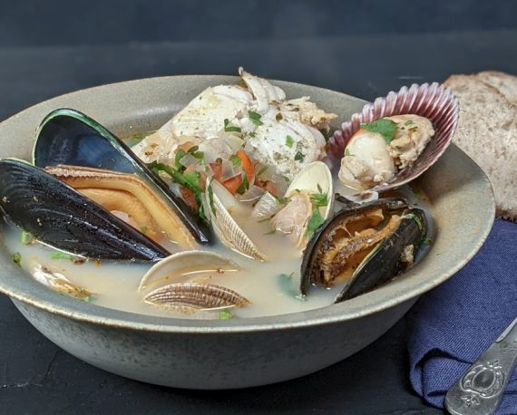

El jurel.
Existen variaciones de la paila marina, como el mariscal caliente, que incluye ingredientes similares pero con un enfoque ligeramente diferente. Es común adaptar la receta según la disponibilidad de mariscos locales o preferencias personales. Para conseguir el mejor sabor, se recomienda utilizar mariscos frescos y ajustar las especias al gusto
